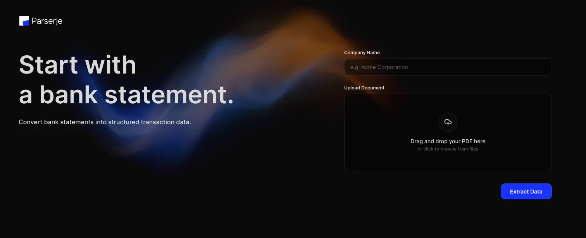
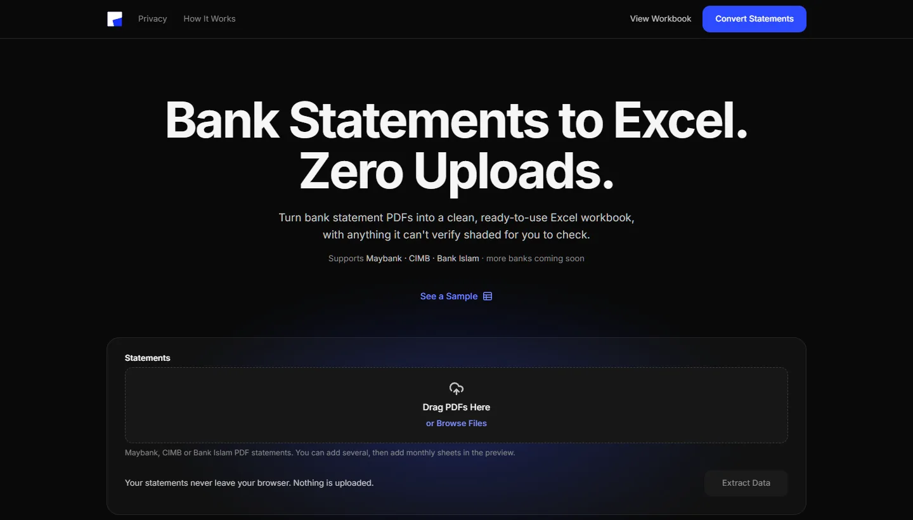
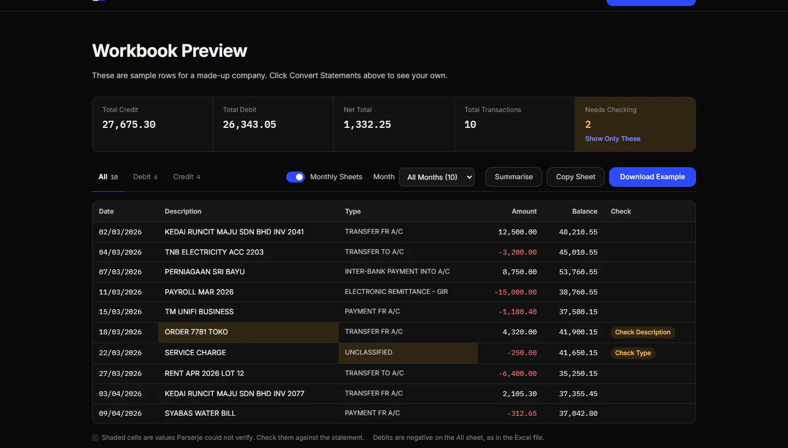
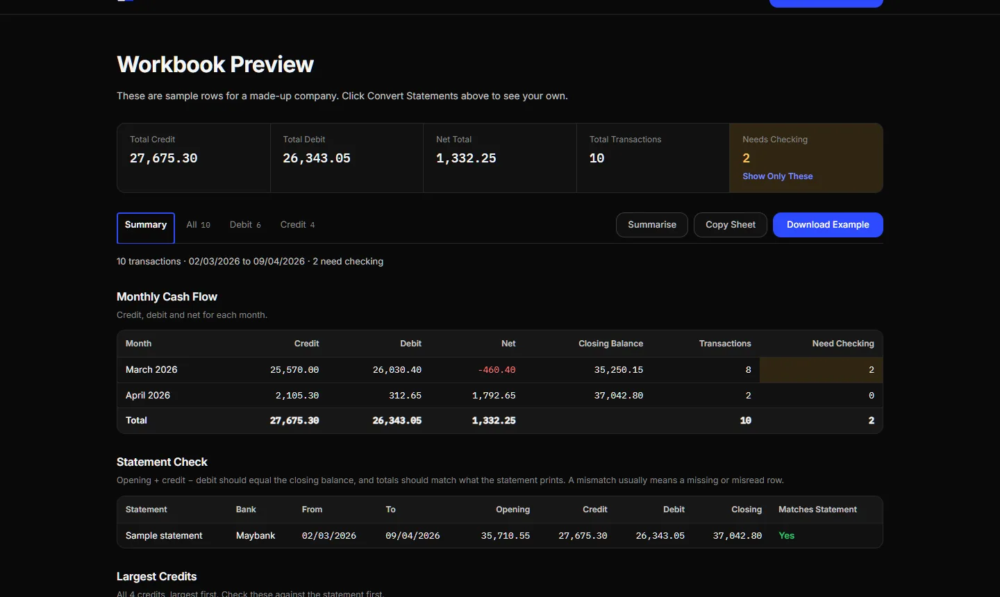
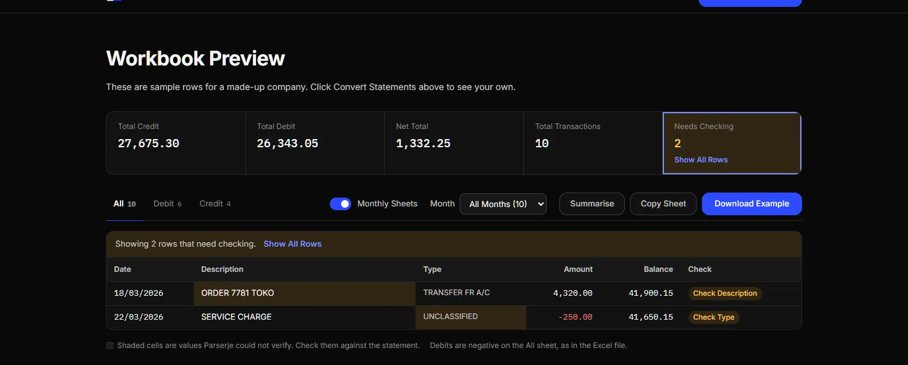
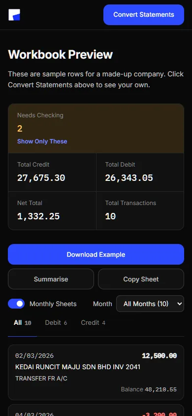

Kept it to one screen
Drop in your PDFs, press Extract Data, get a workbook. No account, no settings page, nothing to learn first.

case study
Parserje turns bank-statement PDFs into a clean Excel list of transactions. It runs on your own computer, as a Windows app or in the browser, so statements never get uploaded. I designed it, built it and ran it like a product, from the first screen to the beta.
role
I designed the interface and the brand direction (still a work in progress), built the app and its bank readers, and ran the releases: weekly batches, an issue tracker and QA before every release.
problem
Drop in your PDFs, press Extract Data, get a workbook. No account, no settings page, nothing to learn first.

Statements are sensitive, so everything runs on the device. The web version says it up front, Zero Uploads, and it can even convert with the network switched off.

Totals sit on top, rows Parserje can’t verify are shaded, and one tile filters straight to them. A summary adds monthly cash flow and a statement check when you ask for it.


Weekly batches of at most three fixes, written notes for every release, and independent QA before anything shipped. The web version also went through a full UX audit, with the fixes rolled into the releases that followed.
the challenge
Maybank, CIMB, Bank Islam and BSN all lay out their statements their own way, and some statements are scans with no text at all.
what I did
One reader per bank, kept separate so a fix for one never breaks another. Parserje reads the PDF’s text first and only falls back to OCR for scanned pages.
the challenge
In testing, a Bank Islam statement came back with only a few rows, most of them wrong, and the app still said Extraction Complete.
what I did
I added a reliability check. Totals are matched against the statement’s own summary, and the running balance is checked from opening to closing. If it doesn’t add up, the result says Extracted With Issues and asks before you download.

the challenge
The progress steps ran on a timer instead of the actual work, and a failed run wiped your files and settings.
what I did
Progress now follows the real extraction, there’s a Cancel button, and your selection survives a failure.
the challenge
The results table was 820px wide, so on a phone only the date and description showed.
what I did
Below 640px every row becomes a card with the date and amount on top, and the Needs Checking tile moves to the front of the totals.

Parserje is in beta on Windows and the web. Statements from four Malaysian banks become a checked, ready-to-use workbook, without ever leaving the device.